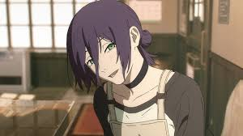
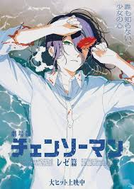
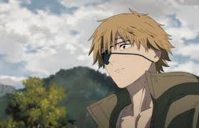
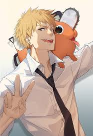
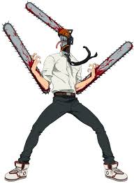

Reze Page
Visit Chainsaw man wiki for more info on Reze
This is Reze.
I love doing coding



I love Reze.
she is an antagonist
is the bomb devil
had a similar childhood to denji
I miss her...
Visit Chainsaw man wiki for more info on Reze
This is Reze.
I love doing coding


I love Reze.
she is an antagonist
is the bomb devil
had a similar childhood to denji
I miss her...
Visit Chainsaw man wiki for more info on Denji
Denji is the protagonist of the show
All he wants is love
He's been abused all his life
A lot of people think Denji is a
Goonerbut he isn't he's just broken.Has a devil named pochita as his heart and also best friend


